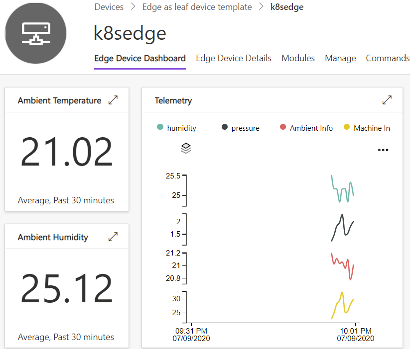

Introduction
Azure IoT Edge can integrate with Kubernetes, using it as a resilient, highly available infrastructure layer. It registers an IoT Edge Custom Resource Definition (CRD) with the Kubernetes API Server and provides a CRD controller that reconciles cloud-managed desired state with the local cluster state.
Module lifetime is managed by the Kubernetes scheduler, which maintains module availability and chooses their placement. IoT Edge manages the edge application platform running on top, continuously reconciling the desired state specified in IoT Hub with the state on the edge cluster. The edge application model is still the familiar model based on IoT Edge modules and routes. The IoT Edge agent performs the role of a CRD controller, automatically translating from IoT Edge application model to Kubernetes native constructs like pods, deployments, services etc.

The high level diagram above might help you understand where Kubernetes fits in a typical production IoT Edge architecture.
💡
A good mental model for this integration is to think of Kubernetes as another operating environment IoT Edge applications can run on in addition to Linux and Windows.
Architecture and initialization flow

Multi-tenancy
When installed on Kubernetes, IoT Edge is deployed into a specified Kubernetes namespace. All resources and services required by the deployment are created within this namespace. Therefore, it's possible to install multiple IoT Edge deployments into the same cluster, each in its seperate namespace.
There is no upper limit enforced on the number of namespaces, this is generally a function of resource capacity of the cluster.
Security architecture
IoT Edge runtime on Kubernetes leverages standard RBAC method to regulate access to resources inside Kubernetes cluster. Edge runtime installs itself in a namespace provided by user. All resources it creates during installation and work are scoped to the namespace.
+----------------+ +-------------------------------+ +--------------------------------------+
| ServiceAccount |---+---| ClusterRoleBinding |------| ClusterRole |
| iotedged | | | iotedge:{name}:auth-delegator | | system:auth-delegator |
+----------------+ | +-------------------------------+ +--------------------------------------+
| +-------------------------------+ +--------------------------------------+
+---| ClusterRoleBinding [OPTIONAL] |------| ClusterRole [OPTIONAL] |
| | iotedge:{name}:node-observer | | iotedge:{name}:iotedge:node-observer |
| +-------------------------------+ +--------------------------------------+
| +-------------------------------+ +--------------------------------------+
+---| RoleBinding |------| Role |
| iotedged | | iotedged |
+-------------------------------+ +--------------------------------------+
+----------------+ +-------------------------------+ +--------------------------------------+
| ServiceAccount |-------| RoleBinding |------| Role |
| edgeagent | | edgeagent | | edgeagent |
+----------------+ +-------------------------------+ +--------------------------------------+
iotedged
iotedged is the most privileged component in an Edge deployment so it requires a ClusterRole but with very limited scope of roles. It needs these permissions to start the EdgeAgent and monitor its status. The full list of permissions required for iotedged can be found in the source repository.
In addition to standard permissions to list, create, delete, update and watch Kubernetes resources like Deployments, Pods, Services, ConfigMaps etc (within the device namespace), it requires security related permissions.
iotedged has a ClusterRole because it performs the following cluster wide operations:
- When reporting system information, it lists nodes and collects all unique types of architecture with number of nodes of this type.
- TokenReview, which is the foundation of module authentication.
Each installation will create its own ClusterRole and ClusterRoleBinding for iotedged.
EdgeAgent
EdgeAgent doesnt need to perform cluster-wide operations so it is downgraded to a Role with permissions scoped to the namespace the edge device is installed in. All security operations are delegated to iotedged.
EdgeHub and modules
EdgeHub and other modules shouldn''t rely on any Kubernetes specific APIs and are runtime agnostic. As a result, no specific roles and permissions to access Kubernetes resources is required.
Module Authentication
In order to authenticate modules in Kubernetes iotedged leverages approach Kubernetes API itself uses to authenticate its clients.
Each Edge module has a dedicated ServiceAccount assigned to deployment. This ServiceAccount works as module identity in Kubernetes cluster. It doesn''t require to have any roles associated with it so EdgeAgent doesn't create any Roles and RoleBindings for modules. Each deployed pod module contains a token that can be passed to iotedged as an Authorization bearer token which iotedged reviews against Kubernetes API. The response contains a status field of the request to indicate the success of the review. If the review finishes successfully it will contain the name of the ServiceAccount the token belongs to. A given ServiceAccount is used as a module identity to allow an access to certain iotedged operation calls.
For each user module, EdgeAgent puts a sidecar proxy container that establish secure TLS connection between iotedged and module container. The trust bundle that iotedged generates during an initialization process is mounted as a ConfigMap volume to a proxy container. It contains certs required to establish secure communication with iotedged.
In addition, proxy reads auth token file from mounted pod volume and provide it as an Authorization bearer token with every outgoing request to iotedged.
From a module point of view, it communicates with iotedged via HTTP and all necessary work to secure connection is taking care of by sidecar proxy.
+--------------------------------------------------------------------------------+
| +----------------+ +----------------------------------------+ |
| | +------------+ | | +-----------+ +-----------+ | |
| | | | | HTTPS | | | HTTP | | | |
| | | iotedged |<-------------------->| proxy |<---------->| ModuleA | | |
| | | | | Authorization | | | | | | |
| | +------------+ | | +-----------+ +-----------+ | |
| | pod ^ | | pod | |
| +-------|--------+ +----------------------------------------+ |
| | namespace |
+---------|----------------------------------------------------------------------+
|
HTTPS | POST
| TokenReview
v
+------------+
| Kube API |
+------------+
High availability and scaling
What is supported
Resilience to node failure
As IoT Edge uses Kubernetes native constructs like Deployments, it benefits from inherent platform capabilities (when configured for HA) to keep workloads running by moving them off unhealthy nodes to healthy ones. This avoids having a single point of failure for mission critical edge workloads.
⚠️
To avoid data/context loss in the event of a node failure, Kubernetes needs to be configured to use remote or replicated (non local-only) storage providers. Public cloud vendors like Azure and most managed Kubernetes distributions provide a first-class solution for this. For a custom setup there are a number of OSS providers like NFS, Rook, OpenEBS etc. Read this CNCF blogpost to learn more, and see some of providers that are supported.
Scaling by adding modules to the deployment manifest
It is possible to scale edge modules mechanically by specifying modules with different IDs but same container image in the same IoT Edge deployment and fronting them with a reverse proxy.
What is not supported
IoT Edge on Kubernetes does not yet provide high availability with manual or auto scaling per the usual Kubernetes definition. In other words, all modules deployed via IoT Edge are currently singletons - only single instances are supported.
The primary reason for this is that IoT Edge couples the application model based on Docker API with an opinionated programming model based on Azure IoT SDK. The programming model is optimized for in-order message delivery which is important for many IoT scenarios. While it is certainly possible to deploy modules that do not use IoT SDK using IoT Edge, each module gets an IoT Hub identity anyway even if it doesn't use it.
The ability to dynamically create new module identities when multiple replicas are requested is not yet implemented. IoT Edge's in-order message delivery guarantee combined with multiple module replicas is challenging to implement and needs careful design. We intend to explore this use case in the future.
createOptions extensions
As mentioned previously, IoT Edge on Kubernetes automatically translates IoT Edge's docker-based application model to the Kubernetes native application model. However, there are many concepts in the Kubernetes that cannot be expressed in a docker-based application model. Examples include persistent volumes, node selectors, secrets etc.
In order to leverage some useful Kubernetes specific constructs in an IoT Edge deployment manifest, you can use the createOptions extensions feature. This allows you to use native Kubernetes API format to express requirements in a module's createOptions section.
Here are some key points to take note of regarding this feature:
-
Only a small subset of Kubernetes appication model, listed below, are supported.
-
When present, the createOptions extensions section is ignored without error when processed by the edgeAgent operating in a non-Kuberenetes mode (i.e. when deployed on a single device with a docker engine).
Feature enabling
These options will take effect if both variables ExperimentalFeatures__Enabled and ExperimentalFeatures__EnableK8SExtensions are set to true for edgeAgent when operating in Kubernetes mode.
These are turned on by default in edgek8s/edge-kubernetes Helm chart.
Several examples in the tutorials section demonstrate how to use the feature.
Supported extensions
See the repo docs for supported extensions.
IoT Edge on Kubernetes uses the same Docker-based application model built around edge modules as a single device with Docker engine.
However, configuring the modules to run on Kubernetes involve a number of differences compared to a Docker engine environment and require a grasp of a few k8s-specific concepts.
The content in the section highlights the major differences to be aware of and best practice recommendations informed by real-world customer deployments.
Host storage
Do not mount storage from the host directly into a module.
Unlike a single device environment, host storage on Kubernetes is ephemeral. As pods can be moved between agent nodes, any data that your application persists directly on a node will be lost when the pod gets re-scheduled to a different node.
It follows that you should not attempt to directly mount files from the host either. In fact, this is not supported on Kubernetes. If your module needs to read its configuration from a file consider using a configmap as demonstrated in a subsequent tutorial.
If your modules need to persist data, use Kubernetes persistent volumes leveraging best practices recommended in the following section.
Persistent storage
💡 For Azure Stack Edge specific guidance, please see the ASE section.
Use Kubernetes persistent volumes.
If your module needs to persist non-ephemeral data, be sure to use Persistent Volumes. In the namespace for your IoT Edge workloads, pre-create Persistent Volume Claims (PVC) for modules that require persistence.
Always configure iotedged with a PVC
At a minimum, one PVC is required for iotedged to store its crypto material.
On multi-node k8s clusters this PVC cannot be backed by host local storage as
its stored state needs to be attached to iotedged pod even if it gets moved
to a different agent node.
If a new instance of iotedged pod cannot access its previously created
state, it will create new state and starting running. However, all previously
running modules will fail and will need to be manually restarted to sync up with
the new iotedged instance.
When installing iotedged into the cluster, simply reference the pre-created
PVC in the helm install command like so:
helm install --repo https://edgek8s.blob.core.windows.net/staging pv-iotedged-example edge-kubernetes \
--namespace pv-iotedged \
--set "iotedged.data.persistentVolumeClaim.name=replace-with-PVC-name" \
--set "provisioning.deviceConnectionString=$connStr"
Configure edgeHub with a PVC to avoid message loss
edgeHub always persists messages before sending an ack to the sender. This
is what enables offline store-and-forward functionality. If edgeHub is not
configured with a persistent volume for its message store and it restarts (either
on the same node or different node) any undelivered messages stored by the older
instance are lost.
If your scenario requires no message loss be sure to configure edgeHub with
a PVC. On a multi-node cluster, this persistent volume should be backed by non-host-local storage.
Configure modules' persistent storage using createOption extensions
Rather than rely on Docker API translations, it is simplest to use createOption extensions to assign pre-created PVCs to modules. The technique is demonstrated by this tutorial.
ReadWriteOnce volumes need additional configuration
Volumes can have different access modes.
For ReadWriteOnce volumes deployment strategy should be set to Recreate. For
more details, see Deployment strategy guidance
Some StorageClasses may need custom security context
fsGroup and runAsUser might be need to be set for some storage classes to avoid
permission errors when accessing the persistent volume. For example, the following
securityContext
setting were required for the Blob Storage module
to work with Longhorn volumes on K3s:
{
.
.
"k8s-experimental": {
.
.
"securityContext": {
"fsGroup": "3000",
"runAsUser": "1000"
}
}
}
Azure Stack Edge
Azure Stack Edge (ASE) appliances have IoT Edge running in a Kubernetes environment as an option for compute. ASE provides a way to create shares that can be used as storage for IoT Edge modules via createOption translations as demonstrated in a subsequent tutorial.
Always use Mounts with type volume to reference shares
After creating an ASE share, to assign it to a module use Mounts in the module's
createOptions of type volume. The Source value should be the same as the
ASE share name. Target value is the module's filesystem location where the
volume should be mounted.
"createOptions": {
"HostConfig": {
"Mounts": [
{
"Target": "/storage",
"Source": "message-storage",
"Type": "volume",
"ReadOnly": "false"
}
]
}
}💣 Note
To avoid message loss the
edgeHubmodule should be configured with persistent volumes as demonstrated in the subsequent persistent volumes tutorial. Ignore thehelmcommands as those are not required on ASE.
Work with proxies
If IoT Edge is required to connect via a proxy server, specify its address in the install command.
helm install --repo https://edgek8s.blob.core.windows.net/staging example edge-kubernetes \
--namespace helloworld \
--set "iotedged.data.persistentVolumeClaim.name=iotedged-data" \
--set "iotedged.data.httpsProxy=replace-with-proxy-server-address" \
--set "iotedged.data.noProxy=localhost" \
--set "provisioning.deviceConnectionString=$connStr"Proxy settings are propagated to edgeAgent as well in addition to iotedged.
noProxy=localhost is required to prevent local communication from passing through the
proxy server.
🗒 On Azure Stack Edge, follow guidance from their docs.
Modules specify proxy settings in deployment manifest
All other modules in the IoT Edge deployment that need communicate via the proxy
server (e.g. edgeHub) should follow guidance to specify the proxy address in
the deployment manifest.
They should also add a NO_PROXY environment variable set to localhost.
This is an additional requirement when running on Kubernetes because modules
are configured to communicate with iotedged using http://localhost
Expose module services
Ensure all ports required for communication are specified under PortBindings.
The expose services within the cluster tutorial details how to expose a module's endpoint(s) to enable communication between modules in the same namespace. See the external services tutorial for guidance on how to expose services to clients external to the cluster.
The important difference compared to Docker-based deployments is that clients cannot
access ports that are not defined in PortBindings section.
Run on host network
For some scenarios, especially those involving the BACNet protocol, workloads need to run on the host network namespace. This is not the default configuration for Kubernetes, so to run a module on the host network use following createOptions:
{
"HostConfig": {
"NetworkMode": "host"
}
}
The edgeAgent translates these createOptions to setup the module to run in the
host network namespace on Kubernetes. Unlike Docker-based deployments the NetworkingConfig
section is not required. It will be ignored if specified.
All modules don't need to run in the host network to be able to communicate with each other. For example, a BACNet module running on the host network can connect to
edgeHubmodule running on the internal cluster network.
Use resources and limits
Set module CPU/memory limits and/or reservations
In many scenarios, IoT Edge is sharing cluster resources with other user and system workloads. Therefore, it is highly recommended that modules declare their CPU and memory reservations or limits using createOption extensions as demonstrated by the tutorial on using resources. See the Kubernetes documentation on how to correctly use this.
Reservations for iotedged and edgeAgent pods are already specified in the Helm
chart, so you don't need to set them yourself for these two pods.
Leverage device plugins for using other device resources
If your module needs access to special device hardware like accelerators, use the device plugin framework. See the GPU/FPGA access Azure Stack Edge documentation as an example.
Do not mount device paths directly into the module using its createOptions.
Adjust Deployment strategy
The default module update behavior is RollingUpdate. This spins up a new instance
of the module and ensures it is running before tearing down the old instance. This
is great for reducing module downtime, however there are conditions where this update
strategy does not work.
If a module is using an exclusive resource like a persistent volume of type
ReadWriteOnce or a device plugin resource like a GPU, the new instance remains in
the pending state until the old instance relinquishes the held resource. At the same
time, the old instance is not removed until the new instance starts running. So,
things are deadlocked and the update process becomes stuck indefinitely.
To avoid this condition, adjust the createOptions of a module that is using exclusive
resources by setting its deployment strategy to Recreate.
💣
Recreatedeployment strategy can increase module downtime as the old module instance is torn down before the new instance starts running. If the update specifies a new container image, for example, the module will remain down until the new image is pulled and started.
Avoid using Docker socket
Do not mount docker.sock into any module!
Some modules in the single device, Docker-engine, scenario mount the Docker
socket from the host. That is practice not recommended in any scenario since it
essentially gives the module root privileges on the system.
It is particularly egregious on Kubernetes since many Kubernetes distributions do not even have the Docker engine installed and rely on a lower level Container runtime like containerd. Taking a dependency on the Docker socket is guaranteed to fail at run time on such clusters.
Getting access to logs and metrics is a common reason for mounting the Docker socket. The recommended way to get logs and metrics on a Kubernetes cluster is to install a cluster-wide observability solution like Azure Monitor.
Examples
Prerequisites
A Kubernetes cluster
A Kubernetes cluster that supports Custom Resource Definitions (CRD) is required for using Azure IoT Edge with Kubernetes. v1.12 or newer is recommended. Here are some options if you don't already have a cluster available:
For a managed cluster offering, consider Azure Kubernetes Service (AKS). You can stand one up using the AKS QuickStart instructions.
For a local development environment, you can use Minikube or k3d (recommended).
Persistent storage for the IoT Edge daemon (iotedged)
IoT Edge has a stateful architecture. Even if the workload modules are stateless, at a minimum, the context store for iotedged pod should be backed by non-ephemeral storage. Barring first-class support for native persistent volumes in your distribution, the local-path-provisioner provides a convenient way to utilize device local storage as a persistent store in a Kubernetes-native manner. For multi-node setup with node failure resilience, see the HA and scaling section.
For convenience, most tutorials that follow don't set up iotedged persistence. Persistence is not needed for getting things up and running but is highly recommended for demos, PoCs and, of course, production pilots. See the iotedged persistence tutorial for configuring state persistence for
iotedged.
Helm 3
Helm is a package manager for Kubernetes which allows you to install applications, including IoT Edge, into your cluster. Please follow the Helm 3 install instructions.
The source code for Helm charts used by IoT Edge is available in the azure/iotedge repo
kubectl
Kubectl is an essential tool for interacting with your cluster.
Visual Studio Code
Visual Studio Code with IoT Edge extension is recommended for working with IoT Edge's deployment manifests and submitting them to IoT Hub.
Visualization tools (optional)
Tools like Octant and K9s can help you understand the architecture and state of your cluster application.
This example demonstrates a "Hello, world" scenario of deploying a simulated temperature sensor edge module. It requires a Kubernetes cluster with Helm initialized and kubectl installed as noted in the prerequisites.
Setup steps
-
Register an IoT Edge device and deploy the simulated temperature sensor module. Be sure to note the device's connection string.
-
Create a Kubernetes namespace to install the edge deployment into.
kubectl create ns helloworld -
Install IoT Edge Custom Resource Definition (CRD).
helm install --repo https://edgek8s.blob.core.windows.net/staging edge-crd edge-kubernetes-crd -
Deploy the edge workload into the previously created K8s namespace.
For simplicity, this tutorial doesn't specify a persistent store for
iotedgedduring install. However, for any serious/PoC deployment, follow the best practice example shown in the iotedged failure resilience tutorial.# Store the device connection string in a variable (enclose in single quotes) export connStr='replace-with-device-connection-string-from-step-1' # Install edge deployment into the created namespace helm install --repo https://edgek8s.blob.core.windows.net/staging edge1 edge-kubernetes \ --namespace helloworld \ --set "provisioning.deviceConnectionString=$connStr" -
In a couple of minutes, you should see the workload modules defined in the edge deploymentment running as pods along with
edgeagentandiotedged. Confirm this using:kubectl get pods -n helloworld # View the logs from the simlulated temperature sensor module kubectl logs -n helloworld replace-with-temp-sensor-pod-name simulatedtemperaturesensor
Cleanup
# Cleanup
helm del edge1 -n helloworld && \
kubectl delete ns helloworld
...will remove all the Kubernetes resources deployed as part of the edge deployment in this example (IoT Edge CRD will not be deleted).
Using Kubernetes Persistent Volumes
Persistent volumes (PV) are a key construct for stateful applications in Kubernetes. By attaching them to pods, compute can be allowed to "roam" among cluster nodes while preserving their data, as long as pods store their state in persistent volumes. To workloads, PVs appear as locations on the filesystem they can use to store and retrieve files.
IoT Edge modules can leverage persistent volumes implicitly via IoT Edge app model translations or explicitly using createOptions extensions. The next two examples with demonstrate how to use PVs to make modules resilient to node failures using either option.
This example demostrates how to back the edgeHub module's message store by using persistent volumes implicitly via app model translations. It requires a Azure Kubernetes (AKS) cluster with Helm initialized and kubectl installed as noted in the prerequisites. You'll also be using VS Code with Azure IoT tools to work with the edge workload (deployment) manifest.
Setup steps
-
As needed, follow the steps to register an IoT Edge device. Take note of the device connection string.
-
Set up VS Code and tools, associate with IoT Hub from the previous step.
-
Create an Azure File storage class.
-
Follow steps, or a subset as needed, to install edge deployment into the cluster.
# Create K8s namespace kubectl create ns pv1 # Install IoT Edge CRD, if not already installed helm install --repo https://edgek8s.blob.core.windows.net/staging edge-crd edge-kubernetes-crd # Store the device connection string in a variable (enclose in single quotes) export connStr='replace-with-device-connection-string-from-step-1' -
Specify persistent volume details to use in
edgeAgentmodule's environment variables during workload install.For simplicity, this tutorial doesn't specify a persistent store for
iotedgedduring install. However, for any serious/PoC deployment, follow the best practice example shown in the iotedged failure resilience tutorial.helm install --repo https://edgek8s.blob.core.windows.net/staging pv-example1 edge-kubernetes \ --namespace pv1 \ --set "provisioning.deviceConnectionString=$connStr" \ --set "edgeAgent.env.persistentVolumeClaimDefaultSizeInMb=5000" \ --set "edgeAgent.env.storageClassName=azurefile"With these install options, any edge workload module that specifies a bind type of
volumein the createOptionsHostConfigsection will be backed by a persistent volume claim on the provided StorageClass. -
In the Visual Studio Code command palette (View menu -> Command Palette...), search for and select Azure IoT Edge: New IoT Edge Solution. Follow the prompts and use the following values to create your solution:
Field Value Select folder Choose the location on your development machine for VS Code to create the solution files. Provide a solution name Enter a descriptive name for your solution or accept the default EdgeSolution. Select module template Choose Empty solution. Make updates to the deployment.template.json (see navigation pane on the left) to configure the
edgeHubmodule to use a storage folder backed by a volume.{ "$schema-template": "2.0.0", "modulesContent": { "$edgeAgent": { "properties.desired": { "schemaVersion": "1.0", "runtime": { "type": "docker", "settings": { "minDockerVersion": "v1.25", "loggingOptions": "", "registryCredentials": {} } }, "systemModules": { "edgeAgent": { "type": "docker", "settings": { "image": "mcr.microsoft.com/azureiotedge-agent:1.0", "createOptions": {} } }, "edgeHub": { "type": "docker", "status": "running", "restartPolicy": "always", "settings": { "image": "mcr.microsoft.com/azureiotedge-hub:1.0", "createOptions": { + "Env": [ + "storageFolder=/storage" + ], "HostConfig": { + "Mounts": [{ + "Target": "/storage", + "Source": "message-storage", + "Type": "volume", + "ReadOnly": "false" + }], "PortBindings": { "5671/tcp": [{ "HostPort": "5671" }], "8883/tcp": [{ "HostPort": "8883" }], "443/tcp": [{ "HostPort": "443" }] } } } } } }, "modules": {} } }, "$edgeHub": { "properties.desired": { "schemaVersion": "1.0", "routes": {}, "storeAndForwardConfiguration": { "timeToLiveSecs": 7200 } } } } } -
Generate the workload deployment config by right-clicking the deployment.template.json in the left navigation pane and selecting Generate IoT Edge Deployment Manifest. This will generate the minified deployment.amd64.json under the config directory.
-
Update the configuration for the device by right-clicking deployment.amd64.json and selecting Create Deployment for Single Device. In the displayed list, choose the device created in step 1 to complete the operation.
-
In a few seconds, you'll see a new
edgeHubcontainer instantiated with/storagelocation backed by a persistent volume.# List persistent volume claims kubectl get pvc -n pv1
Cleanup
# Cleanup
helm del pv-example1 -n pv1 && \
kubectl delete ns pv1
...will remove all the Kubernetes resources deployed as part of the edge deployment in this example (IoT Edge CRD will not be deleted).
This example demostrates how to back the edgeHub module's message store by using persistent volumes explicitly via K8s createOptions extensions. It requires a Azure Kubernetes (AKS) cluster with Helm initialized and kubectl installed as noted in the prerequisites. You'll also be using VS Code with Azure IoT tools to work with the edge workload (deployment) manifest.
Setup steps
-
As needed, follow the steps to register an IoT Edge device. Take note of the device connection string.
-
Set up VS Code and tools, associate with IoT Hub from the previous step.
-
Create an Azure File storage class.
-
Create an Azure File persistent volume claim and make note of its name.
-
Follow steps, or a subset as needed, to install edge deployment into the cluster.
For simplicity, this tutorial doesn't specify a persistent store for
iotedgedduring install. However, for any serious/PoC deployment, follow the best practice example shown in the iotedged failure resilience tutorial.# Create K8s namespace kubectl create ns pv2 # Install IoT Edge CRD, if not already installed helm install --repo https://edgek8s.blob.core.windows.net/staging edge-crd edge-kubernetes-crd # Store the device connection string a variable (enclose in single quotes) export connStr='replace-with-device-connection-string-from-step-1' -
Deploy the edge workload into the previously created K8s namespace.
helm install --repo https://edgek8s.blob.core.windows.net/staging pv-example2 edge-kubernetes \ --namespace pv2 \ --set "provisioning.deviceConnectionString=$connStr" -
In the Visual Studio Code command palette (View menu -> Command Palette...), search for and select Azure IoT Edge: New IoT Edge Solution. Follow the prompts and use the following values to create your solution:
Field Value Select folder Choose the location on your development machine for VS Code to create the solution files. Provide a solution name Enter a descriptive name for your solution or accept the default EdgeSolution. Select module template Choose Empty solution. Make updates to the deployment.template.json (see navigation pane on the left) to configure the
edgeHubmodule to use a storage folder backed by a volume.{ "$schema-template": "2.0.0", "modulesContent": { "$edgeAgent": { "properties.desired": { "schemaVersion": "1.0", "runtime": { "type": "docker", "settings": { "minDockerVersion": "v1.25", "loggingOptions": "", "registryCredentials": {} } }, "systemModules": { "edgeAgent": { "type": "docker", "settings": { "image": "mcr.microsoft.com/azureiotedge-agent:1.0", "createOptions": {} } }, "edgeHub": { "type": "docker", "status": "running", "restartPolicy": "always", "settings": { "image": "azureiotedge/azureiotedge-hub:latest", "createOptions": { + "Env": [ + "storageFolder=/storage" + ], "HostConfig": { "PortBindings": { "5671/tcp": [{ "HostPort": "5671" }], "8883/tcp": [{ "HostPort": "8883" }], "443/tcp": [{ "HostPort": "443" }] } }, + "k8s-experimental": { + "volumes": [{ + "volume": { + "name": "pvcvol", + "persistentVolumeClaim": { + "claimName": "azurefile" + } + }, + "volumeMounts": [{ + "name": "pvcvol", + "mountPath": "/storage" + }] + }] + } } } } }, "modules": {} } }, "$edgeHub": { "properties.desired": { "schemaVersion": "1.0", "routes": { "upstream": "FROM /messages/* INTO $upstream" }, "storeAndForwardConfiguration": { "timeToLiveSecs": 7200 } } } } }Volume and VolumeMount API reference have details on allowed values and defaults.
🗒
We've used
edgeHubas an example here, however you can specify K8s extended createOptions for any module in the edge deployment. -
Generate the workload deployment config by right-clicking the deployment.template.json in the left navigation pane and selecting Generate IoT Edge Deployment Manifest. This will generate the minified deployment.amd64.json under the config directory.
-
Update the configuration for the device by right-clicking deployment.amd64.json and selecting Create Deployment for Single Device. In the displayed list, choose the device created in step 1 to complete the operation.
-
In a few seconds, you'll see a new
edgeHubcontainer instantiated with/storagelocation backed by a persistent volume.# List persistent volume claims kubectl get pvc -n pv2
Cleanup
# Cleanup
helm del pv-example2 -n pv2 && \
kubectl delete ns pv2
...will remove all the Kubernetes resources deployed as part of the edge deployment in this example (IoT Edge CRD will not be deleted).
This example demostrates how you can use Kubernetes configmaps, in an IoT Edge deployment. It requires a Kubernetes cluster with Helm initailized and kubectl installed as noted in the prerequisites. You'll also be using VS Code with Azure IoT tools to work with the edge workload (deployment) manifest.
Setup steps
-
As needed, follow the steps to register an IoT Edge device. Take note of the device connection string.
-
Set up VS Code and tools, associate with IoT Hub from the previous step.
-
Follow steps, or a subset as needed, to install edge deployment into the cluster.
For simplicity, this tutorial doesn't specify a persistent store for
iotedgedduring install. However, for any serious/PoC deployment, follow the best practice example shown in step 6 of iotedged failure resilience tutorial.# Create K8s namespace kubectl create ns cm # Install IoT Edge CRD, if not already installed helm install --repo https://edgek8s.blob.core.windows.net/staging edge-crd edge-kubernetes-crd # Store the device connection string in a variable (enclose in single quotes) export connStr='replace-with-device-connection-string-from-step-1' # Install the edge workload into the cluster namespace helm install --repo https://edgek8s.blob.core.windows.net/staging cm-example edge-kubernetes \ --namespace cm \ --set "provisioning.deviceConnectionString=$connStr" -
In the Visual Studio Code command palette (View menu -> Command Palette...), search for and select Azure IoT Edge: New IoT Edge Solution. Follow the prompts and use the following values to create your solution:
Field Value Select folder Choose the location on your development machine for VS Code to create the solution files. Provide a solution name Enter a descriptive name for your solution or accept the default EdgeSolution. Select module template Choose Empty solution. You'll be making updates to deployment.template.json (see navigation pane on the left) to configure the
edgeHubmodule to use K8s configmaps. -
Create a configmap in the namespace previously created.
kubectl create configmap special-config \ --from-literal=special.how=very \ --from-literal=special.type=charm \ --namespace=cm -
Reference the configmap in the
createOptionssection of theedgeHubmodule in deployment.template.json using extended createOptions feature.{ "$schema-template": "2.0.0", "modulesContent": { "$edgeAgent": { "properties.desired": { "schemaVersion": "1.0", "runtime": { "type": "docker", "settings": { "minDockerVersion": "v1.25", "loggingOptions": "", "registryCredentials": {} } }, "systemModules": { "edgeAgent": { "type": "docker", "settings": { "image": "mcr.microsoft.com/azureiotedge-agent:1.0", "createOptions": {} } }, "edgeHub": { "type": "docker", "status": "running", "restartPolicy": "always", "settings": { "image": "mcr.microsoft.com/azureiotedge-hub:1.0", "createOptions": { "HostConfig": { "PortBindings": { "5671/tcp": [{ "HostPort": "5671" }], "8883/tcp": [{ "HostPort": "8883" }], "443/tcp": [{ "HostPort": "443" }] } }, + "k8s-experimental": { + "volumes": [{ + "volume": { + "name": "cmvol", + "configMap": { + "optional": "true", + "name": "special-config" + } + }, + "volumeMounts": [{ + "name": "cmvol", + "mountPath": "/etc/module", + "readOnly": "true" + }] + }] + } } } } }, "modules": {} } }, "$edgeHub": { "properties.desired": { "schemaVersion": "1.0", "routes": {}, "storeAndForwardConfiguration": { "timeToLiveSecs": 7200 } } } } }Volume and VolumeMount API reference have details on allowed values and defaults.
We've used
edgeHubas an example here, however you can specify K8s extended createOptions for any module in the edge deployment. -
Generate the workload deployment config by right-clicking the deployment.template.json in the left navigation pane and selecting Generate IoT Edge Deployment Manifest. This will generate the minified deployment.amd64.json under the config directory.
-
Update the configuration for the device by right-clicking deployment.amd64.json and selecting Create Deployment for Single Device. In the displayed list, choose the device created in step 1 to complete the operation.
-
In a few seconds, you'll see a new
edgeHubpod instantiated with the configmap keys mounted as files at the specified location.# Get pod names kubectl get pods -n cm # Save edgehub pod name in env var export ehname=replace-with-edgehub-pod-name # List volume mount location kubectl exec --namespace=cm $ehname -c edgehub ls /etc/module
Cleanup
# Cleanup
helm del cm-example -n cm && \
kubectl delete ns cm
...will remove all the Kubernetes resources deployed as part of the edge deployment in this example (IoT Edge CRD will not be deleted)
This example demonstrates how to back the iotedged pod using persistent volumes. iotedged contains certificates and other security state which must be persisted on durable storage in order for the edge deployment to be remain functional should the iotedged pod be restarted and/or relocated to another node.
This tutorial requires a Azure Kubernetes (AKS) cluster with Helm initialized and kubectl installed as noted in the prerequisites.
A persistent volume backed by remote or replicated storage to provide resilience to node failure in a multi-node cluster setup. This example uses
azurefilebut you can use any persistent volume provider.Local storage backed persistent volumes provide resilience to pod failure if the new pod happens to land on the same node but does not help in cases where the pod migrates nodes.
See the prerequisites section for more details.
Setup steps
-
As needed, follow the steps to register an IoT Edge device. Take note of the device connection string.
-
Create a Kubernetes namespace for your IoT Edge deployment
kubectl create ns pv-iotedged -
Create an Azure Files storage class.
-
Create a persistent volume claim:
apiVersion: v1 kind: PersistentVolumeClaim metadata: name: iotedged-data-azurefile namespace: pv-iotedged spec: accessModes: - ReadWriteMany storageClassName: azurefile resources: requests: storage: 100Mi -
Specify persistent volume claim name to use for storing
iotedgeddata during install.# Install IoT Edge CRD, if not already installed helm install --repo https://edgek8s.blob.core.windows.net/staging edge-crd edge-kubernetes-crd # Store the device connection string in a variable (enclose in single quotes) export connStr='replace-with-device-connection-string-from-step-1' # Install helm install --repo https://edgek8s.blob.core.windows.net/staging pv-iotedged-example edge-kubernetes \ --namespace pv-iotedged \ --set "iotedged.data.persistentVolumeClaim.name=iotedged-data-azurefile" \ --set "provisioning.deviceConnectionString=$connStr" -
In addition to
iotedged, theedgeHubmodule's message store should also be a backed by a persistent volume to prevent data loss when deployed in a Kubernetes environment. See this tutorial for the steps on how to do this.
Cleanup
# Cleanup
helm del pv-iotedged-example -n pv-iotedged && \
kubectl delete ns pv-iotedged
...will remove all the Kubernetes resources deployed as part of the edge deployment in this tutorial (IoT Edge CRD will not be deleted).
This example demonstrates how to expose an in-cluster Kubernetes Service from an IoT Edge module. It requires a Kubernetes cluster with Helm initialized and kubectl installed as noted in the prerequisites. You'll also be using VS Code with Azure IoT tools to work with the edge workload (deployment) manifest.
Setup steps
-
As needed, follow the steps to register an IoT Edge device. Take note of the device connection string.
-
Set up VS Code and tools, associate with IoT Hub from the previous step.
-
Follow steps, or a subset as needed, to install edge deployment into the cluster.
For simplicity, this tutorial doesn't specify a persistent store for
iotedgedduring install. However, for any serious/PoC deployment, follow the best practice example shown in the iotedged failure resilience tutorial.# Create K8s namespace kubectl create ns internal-service # Install IoT Edge CRD, if not already installed helm install --repo https://edgek8s.blob.core.windows.net/staging edge-crd edge-kubernetes-crd # Store the device connection string in a variable (enclose in single quotes) export connStr='replace-with-device-connection-string-from-step-1' # Install the edge workload into the cluster namespace helm install --repo https://edgek8s.blob.core.windows.net/staging internal-service-example edge-kubernetes \ --namespace internal-service \ --set "provisioning.deviceConnectionString=$connStr" -
In the Visual Studio Code command palette (View menu -> Command Palette...), search for and select Azure IoT Edge: New IoT Edge Solution. Follow the prompts and use the following values to create your solution:
Field Value Select folder Choose the location on your development machine for VS Code to create the solution files. Provide a solution name Enter a descriptive name for your solution or accept the default EdgeSolution. Select module template Choose Empty solution. You'll update deployment.template.json (see navigation pane on the left) to add a sample module that exposes an in-cluster endpoint as a Kubernetes Service.
-
Add a sample aspnetapp module under edgeAgent's properties.desired section as shown below.
The PortBindings section of module's createOptions is translated to a Kubernetes Service of type ClusterIP by default. This type of service is not accessible outside the cluster directly.
You can change HostPort in the module's createOptions to configure the port exposed by the service.
{ "$schema-template": "2.0.0", "modulesContent": { "$edgeAgent": { "properties.desired": { "schemaVersion": "1.0", "runtime": { "type": "docker", "settings": { "minDockerVersion": "v1.25", "loggingOptions": "", "registryCredentials": {} } }, "systemModules": { "edgeAgent": { "type": "docker", "settings": { "image": "mcr.microsoft.com/azureiotedge-agent:1.0", "createOptions": {} } }, "edgeHub": { "type": "docker", "status": "running", "restartPolicy": "always", "settings": { "image": "mcr.microsoft.com/azureiotedge-hub:1.0", "createOptions": { "HostConfig": { "PortBindings": { "5671/tcp": [ { "HostPort": "5671" } ], "8883/tcp": [ { "HostPort": "8883" } ], "443/tcp": [ { "HostPort": "443" } ] } } } } } }, "modules": { + "aspnetapp": { + "settings": { + "image": "mcr.microsoft.com/dotnet/core/samples:aspnetapp", + "createOptions": { + "HostConfig": { + "PortBindings": { + "80/tcp": [ + { + "HostPort": "8082" + } + ] + } + } + } + }, + "type": "docker", + "version": "1.0", + "status": "running", + "restartPolicy": "always" + } } } }, "$edgeHub": { "properties.desired": { "schemaVersion": "1.0", "routes": {}, "storeAndForwardConfiguration": { "timeToLiveSecs": 7200 } } } } } -
Generate the workload deployment config by right-clicking the deployment.template.json in the left navigation pane and selecting Generate IoT Edge Deployment Manifest. This will generate the minified deployment.amd64.json under the config directory.
-
Update the configuration for the device by right-clicking deployment.amd64.json and selecting Create Deployment for Single Device. In the displayed list, choose the device created in step 1 to complete the operation.
-
In a few seconds, you'll see a new pods and services instantiated as defined in the deployment manifest. Check the Services in the namespace to confirm that there's an entry for aspnetapp.
kubectl get services -n internal-service
Cleanup
# Cleanup
helm del internal-service-example -n internal-service && \
kubectl delete ns internal-service
...will remove all the Kubernetes resources deployed as part of the edge deployment in this example (IoT Edge CRD will not be deleted).
This example demonstrates how to expose a Kubernetes Service from an IoT Edge module outside the cluster. It requires a Kubernetes cluster with Helm initialized and kubectl installed as noted in the prerequisites. You'll also be using VS Code with Azure IoT tools to work with the edge workload (deployment) manifest.
Setup steps
-
As needed, follow the steps to register an IoT Edge device. Take note of the device connection string.
-
Set up VS Code and tools, associate with IoT Hub from the previous step.
-
Follow steps, or a subset as needed, to install edge deployment into the cluster.
For simplicity, this tutorial doesn't specify a persistent store for
iotedgedduring install. However, for any serious/PoC deployment, follow the best practice example shown in the iotedged failure resilience tutorial.# Create K8s namespace kubectl create ns external-service # Install IoT Edge CRD, if not already installed helm install --repo https://edgek8s.blob.core.windows.net/staging edge-crd edge-kubernetes-crd # Store the device connection string in a variable (enclose in single quotes) export connStr='replace-with-device-connection-string-from-step-1' # Install the edge workload into the cluster namespace helm install --repo https://edgek8s.blob.core.windows.net/staging external-service-example edge-kubernetes \ --namespace external-service \ --set "provisioning.deviceConnectionString=$connStr"This example demonstrates the easiest way to expose your service externally. It requires your cluster to be able to assign external IP addresses to services of type LoadBalancer.
The canonical pattern is to use Kubernetes Ingress to route requests to your service. The ingress approach is preferred when possible.
-
In the Visual Studio Code command palette (View menu -> Command Palette...), search for and select Azure IoT Edge: New IoT Edge Solution. Follow the prompts and use the following values to create your solution:
Field Value Select folder Choose the location on your development machine for VS Code to create the solution files. Provide a solution name Enter a descriptive name for your solution or accept the default EdgeSolution. Select module template Choose Empty solution. You'll update deployment.template.json (see navigation pane on the left) to add a sample module that exposes an in-cluster endpoint as a Kubernetes Service.
-
Add a sample aspnetapp module under edgeAgent's properties.desired section as shown below. See the Service createOptions extensions for more details.
The PortBindings section of module's createOptions is translated to a Kubernetes Service of type ClusterIP by default. This type of service is not accessible outside the cluster directly.
{ "$schema-template": "2.0.0", "modulesContent": { "$edgeAgent": { "properties.desired": { "schemaVersion": "1.0", "runtime": { "type": "docker", "settings": { "minDockerVersion": "v1.25", "loggingOptions": "", "registryCredentials": {} } }, "systemModules": { "edgeAgent": { "type": "docker", "settings": { "image": "mcr.microsoft.com/azureiotedge-agent:1.0", "createOptions": {} } }, "edgeHub": { "type": "docker", "status": "running", "restartPolicy": "always", "settings": { "image": "mcr.microsoft.com/azureiotedge-hub:1.0", "createOptions": { "HostConfig": { "PortBindings": { "5671/tcp": [ { "HostPort": "5671" } ], "8883/tcp": [ { "HostPort": "8883" } ], "443/tcp": [ { "HostPort": "443" } ] } } } } } }, "modules": { + "aspnetapp": { + "settings": { + "image": "mcr.microsoft.com/dotnet/core/samples:aspnetapp", + "createOptions": { + "HostConfig": { + "PortBindings": { + "80/tcp": [ + { + "HostPort": "8082" + } + ] + } + }, + "k8s-experimental": { + "serviceOptions" : { + "type" : "LoadBalancer" + } + } + } }, "type": "docker", "version": "1.0", "status": "running", "restartPolicy": "always" } } } }, "$edgeHub": { "properties.desired": { "schemaVersion": "1.0", "routes": {}, "storeAndForwardConfiguration": { "timeToLiveSecs": 7200 } } } } } -
Generate the workload deployment config by right-clicking the deployment.template.json in the left navigation pane and selecting Generate IoT Edge Deployment Manifest. This will generate the minified deployment.amd64.json under the config directory.
-
Update the configuration for the device by right-clicking deployment.amd64.json and selecting Create Deployment for Single Device. In the displayed list, choose the device created in step 1 to complete the operation.
-
In a few seconds, you'll see a new pods and services instantiated as defined in the deployment manifest. Check the Services in the namespace to confirm that there's an entry for aspnetapp. Notice also that edgeHub has a cluster IP address but no external address.
kubectl get services -n external-service
Cleanup
# Cleanup
helm del external-service-example -n external-service && \
kubectl delete ns external-service
...will remove all the Kubernetes resources deployed as part of the edge deployment in this example (IoT Edge CRD will not be deleted).
This example demonstrates how to assign modules to run on specific nodes. It requires a Kubernetes cluster with Helm initialized and kubectl installed as noted in the prerequisites. You'll also be using VS Code with Azure IoT tools to work with the edge workload (deployment) manifest.
Setup steps
-
As needed, follow the steps to register an IoT Edge device. Take note of the device connection string.
-
Set up VS Code and tools, associate with IoT Hub from the previous step.
-
Follow steps, or a subset as needed, to install edge deployment into the cluster.
For simplicity, this tutorial doesn't specify a persistent store for
iotedgedduring install. However, for any serious/PoC deployment, follow the best practice example shown in the iotedged failure resilience tutorial.# Create K8s namespace kubectl create ns nodeselector # Install IoT Edge CRD, if not already installed helm install --repo https://edgek8s.blob.core.windows.net/staging edge-crd edge-kubernetes-crd # Store the device connection string a variable (enclose in single quotes) export connStr='replace-with-device-connection-string-from-step-1' -
Deploy the edge workload into the previously created K8s namespace.
helm install --repo https://edgek8s.blob.core.windows.net/staging node-selector-example edge-kubernetes \ --namespace nodeselector \ --set "provisioning.deviceConnectionString=$connStr" -
List the nodes in your cluster.
kubectl get nodes -
Pick one of the nodes and add a label to it like so:
kubectl label nodes <node-name> edgehub=true -
In the Visual Studio Code command palette (View menu -> Command Palette...), search for and select Azure IoT Edge: New IoT Edge Solution. Follow the prompts and use the following values to create your solution:
Field Value Select folder Choose the location on your development machine for VS Code to create the solution files. Provide a solution name Enter a descriptive name for your solution or accept the default EdgeSolution. Select module template Choose Empty solution. Make updates to the deployment.template.json (see navigation pane on the left) to configure the
edgeHubmodule to schedule on a node with a specific label.{ "$schema-template": "2.0.0", "modulesContent": { "$edgeAgent": { "properties.desired": { "schemaVersion": "1.0", "runtime": { "type": "docker", "settings": { "minDockerVersion": "v1.25", "loggingOptions": "", "registryCredentials": {} } }, "systemModules": { "edgeAgent": { "type": "docker", "settings": { "image": "mcr.microsoft.com/azureiotedge-agent:1.0", "createOptions": {} } }, "edgeHub": { "type": "docker", "status": "running", "restartPolicy": "always", "settings": { "image": "azureiotedge/azureiotedge-hub:latest", "createOptions": { "HostConfig": { "PortBindings": { "5671/tcp": [{ "HostPort": "5671" }], "8883/tcp": [{ "HostPort": "8883" }], "443/tcp": [{ "HostPort": "443" }] } }, + "k8s-experimental": { + "nodeSelector": { + "edgehub": "true" + } + } } } } }, "modules": {} } }, "$edgeHub": { "properties.desired": { "schemaVersion": "1.0", "routes": { "upstream": "FROM /messages/* INTO $upstream" }, "storeAndForwardConfiguration": { "timeToLiveSecs": 7200 } } } } }🗒
We've used
edgeHubas an example here, however you can specify K8s extended createOptions for any module in the edge deployment. -
Generate the workload deployment config by right-clicking the deployment.template.json in the left navigation pane and selecting Generate IoT Edge Deployment Manifest. This will generate the minified deployment.amd64.json under the config directory.
-
Update the configuration for the device by right-clicking deployment.amd64.json and selecting Create Deployment for Single Device. In the displayed list, choose the device created in step 1 to complete the operation.
-
In a few seconds, you'll see a new
edgeHubcontainer instantiated on the node you added theedgehub=truelabel to. You can confirm this by checking the NODE column the edgehub pod in the output from below:kubectl get pods -n nodeselector -o wide
Cleanup
# Cleanup
helm del node-selector-example -n nodeselector && \
kubectl delete ns nodeselector
...will remove all the Kubernetes resources deployed as part of the edge deployment in this example (IoT Edge CRD will not be deleted).
This example demostrates how you can use Kubernetes resources in an IoT Edge workload deployment manifest. It requires a Kubernetes cluster with Helm initialized and kubectl installed as noted in the prerequisites. You'll also be using VS Code with Azure IoT tools to work with the edge workload (deployment) manifest.
Setup steps
-
As needed, follow the steps to register an IoT Edge device. Take note of the device connection string.
-
Set up VS Code and tools, associate with IoT Hub from the previous step.
-
Follow steps, or a subset as needed, to install edge deployment into the cluster.
For simplicity, this tutorial doesn't specify a persistent store for
iotedgedduring install. However, for any serious/PoC deployment, follow the best practice example shown in step 6 of iotedged failure resilience tutorial.# Create K8s namespace kubectl create ns resources # Install IoT Edge CRD, if not already installed helm install --repo https://edgek8s.blob.core.windows.net/staging edge-crd edge-kubernetes-crd # Store the device connection string a variable export connStr=replace-with-device-connection-string-from-step-1 # Install the edge workload into the cluster namespace helm install --repo https://edgek8s.blob.core.windows.net/staging resources-example edge-kubernetes \ --namespace resources \ --set "provisioning.deviceConnectionString=$connStr" -
In the Visual Studio Code command palette (View menu -> Command Palette...), search for and select Azure IoT Edge: New IoT Edge Solution. Follow the prompts and use the following values to create your solution:
Field Value Select folder Choose the location on your development machine for VS Code to create the solution files. Provide a solution name Enter a descriptive name for your solution or accept the default EdgeSolution. Select module template Choose Empty solution. You'll be making updates to deployment.template.json (see navigation pane on the left) to configure the
edgeHubmodule to use K8s configmaps. -
Add the Kubernetes resources in the
createOptionssection of theedgeHubmodule in deployment.template.json using Kubernetes extended createOptions feature.{ "$schema-template": "2.0.0", "modulesContent": { "$edgeAgent": { "properties.desired": { "schemaVersion": "1.0", "runtime": { "type": "docker", "settings": { "minDockerVersion": "v1.25", "loggingOptions": "", "registryCredentials": {} } }, "systemModules": { "edgeAgent": { "type": "docker", "settings": { "image": "mcr.microsoft.com/azureiotedge-agent:1.0", "createOptions": {} } }, "edgeHub": { "type": "docker", "status": "running", "restartPolicy": "always", "settings": { "image": "mcr.microsoft.com/azureiotedge-hub:1.0", "createOptions": { "HostConfig": { "PortBindings": { "5671/tcp": [{ "HostPort": "5671" }], "8883/tcp": [{ "HostPort": "8883" }], "443/tcp": [{ "HostPort": "443" }] } }, + "k8s-experimental": { + "resources": { + "limits": { + "memory": "128Mi", + "cpu": "500m", + "hardware-vendor.example/foo": 2 + }, + "requests": { + "memory": "64Mi", + "cpu": "250m", + "hardware-vendor.example/foo": 2 + } + } + } } } } }, "modules": {} } }, "$edgeHub": { "properties.desired": { "schemaVersion": "1.0", "routes": {}, "storeAndForwardConfiguration": { "timeToLiveSecs": 7200 } } } } }Resource requirements API reference has details on allowed values.
🗒
We've used
edgeHubas an example here, however you can specify K8s extended createOptions for any module in the edge deployment. -
Generate the workload deployment config by right-clicking the deployment.template.json in the left navigation pane and selecting Generate IoT Edge Deployment Manifest. This will generate the minified deployment.amd64.json under the config directory.
-
Update the configuration for the device by right-clicking deployment.amd64.json and selecting Create Deployment for Single Device. In the displayed list, choose the device created in step 1 to complete the operation.
-
In a few seconds, you'll see a new
edgeHubpod instantiated with the resources defined deployment manifest.# Get pod names kubectl get pods -n resources # Save edgehub pod name in env var export ehname=replace-with-edgehub-pod-name # Describe pod spec to see resource requests kubectl describe pod --namespace=resources $ehname
Cleanup
# Cleanup
helm del resources-example -n resources && \
kubectl delete ns resources
...will remove all the Kubernetes resources deployed as part of the edge deployment in this example (IoT Edge CRD will not be deleted).
Azure IoT Edge on Kubernetes Connnected to IoT Central

This tutorial demonstrates a scenario of deploying a simulated temperature sensor edge module. It requires a Kubernetes cluster with Helm initialized and kubectl installed as noted in the prerequisites. This tutorial will use an AKS cluster deployed on Azure.
IoT Central Prerequisites
-
Follow the Prerequisites section of this doc to setup an IoT Central application
-
Create a device template, follow the section in this doc
-
Add IoT Edge Device, follow the section in this doc
Setup steps for provisoning Edge device to Central
-
Once you have an AKS cluster deployed go to shell.azure.com

-
Set your subscription where you deployed AKS cluster
$ az account set --subscription "<your azure subscription name>" -
To get Credentials run the following command
$ az aks get-credentials --resource-group <your resource group name> --name <your AKS cluster name> -
Install Helm
$ wget https://get.helm.sh/helm-v3.3.0-rc.1-linux-amd64.tar.gz $ tar -zxvf helm-v3.3.0-rc.1-linux-amd64.tar.gz -
Create a Kubernetes namespace to install the edge deployment into.
kubectl create ns helloworld -
Install IoT Edge Custom Resource Definition (CRD).
helm install --repo https://edgek8s.blob.core.windows.net/staging edge-crd edge-kubernetes-crd -
Deploy the edge workload into the previously created K8s namespace.
For simplicity, this tutorial doesn't specify a persistent store for
iotedgedduring install. However, for any serious/PoC deployment, follow the best practice example shown in the iotedged failure resilience tutorial.# Install edge deployment into the created namespace, get scope id, symmetric key and device id/registration id from IoT Central. In IoT Central go to device explorer, select your edge device and click **Connect** button to get the details. helm install --repo https://edgek8s.blob.core.windows.net/staging edge1 edge-kubernetes \ --namespace helloworld \ --set "provisioning.source=dps" \ --set "provisioning.globalEndpoint=https://global.azure-devices-provisioning.net" \ --set "provisioning.scopeId=<your scope id>" \ --set "provisioning.attestation.method=symmetric_key" \ --set "provisioning.attestation.registration_id=<your device id>" \ --set "provisioning.attestation.symmetric_key=<your device symmetric key>" \
-
In a couple of minutes, you should see the workload modules defined in the edge deploymentment running as pods along with
edgeagentandiotedged. Confirm this using:kubectl get pods -n helloworld
Cleanup
# Cleanup
helm del edge1 -n helloworld && \
kubectl delete ns helloworld
...will remove all the Kubernetes resources deployed as part of the edge deployment in this example (IoT Edge CRD will not be deleted).
Known issues
Some capabilities available on IoT Edge with Docker on a single device are not available in IoT Edge on Kubernetes.
Not all Docker API createOptions are translated
Only a subset of Docker options are translated to Kubernetes. This subset is determined by what is translatable in Kubernetes environment and customer usage scenarios.
Environment variables with colons in their name cannot be used
Replace : with _ to conform to Kubernetes environment variable naming requirements.
Only a single module in a deployment can be started on the host network
Since every module has a sidecar proxy listening on locahost ports, currently only
one module in the edge deployment can be started on the host network. However, a module
on the host network can communicate with other modules on the cluster internal
network without any other changes.
Logging-related edgeAgent direct methods are not available
On Docker-based systems, edgeAgent has logging-related direct methods that enable experiences such as troubleshooting from IoT Hub Portal. These direct methods and experiences are not available when running on Kubernetes.
Built-in metrics from edgeAgent are not available
On Kubernetes, the edgeAgent does not emit built-in metrics. Therefore some of the curated visualizations are not available.
Node.js modules do not start
IoT Edge modules running on Kubernetes based on Node.js IoT SDKs are currently not able to successfully retrieve credentials from iotedged and so cannot start.
Azure IoT Edge's application model is based on the Docker API specifically the createOptions schema. When running on Kubernetes, the same application model is retained and the runtime performs a number of automatic translations to the Kubernetes application model. The goal is that these edge applications designed to run on a single node will work with minimal modifications when installed in a Kubernetes cluster. To achieve this, IoT Edge on Kubernetes has to transform the edge deployment into Kubernetes objects which will support module-module communication.
IoT Edge on Kubernetes creates Namespaces, Deployments, Services, ImagePullSecrets, PersistentVolumeClaims, and ServiceAccounts to establish this framework.
Translation details
Please see repo docs.
Helm chart install options
This section lists the edgeAgent and iotedged options can be set using command line or the Helm chart's values.yaml file during installation.
Few examples in the Tutorials section demonstrate how to set the options from command line.
IoT Edge Daemon can be configured with various settings as described below
| Variable Name | Value |
|---|---|
| data.enableGetNodesRBAC |
|
| data.persistentVolumeClaim.storageClassName |
|
| data.persistentVolumeClaim.name |
|
| data.persistentVolumeClaim.size |
|
Edge agent can be configured with various environment variables as described below
| Variable Name | Value |
|---|---|
| portMappingServiceType |
|
| backupConfigFilePath |
|
| enableK8sServiceCallTracing |
|
| runtimeLogLevel |
|
| upstreamProtocol |
|
| runAsNonRoot |
|
| enableK8sExtensions |
|
| enableExperimentalFeatures |
|
| storageClassName |
When the edgeAgent is started with this option, any module that specifies a docker mount of type volume will be backed by a dynamically created PVC. |
| persistentVolumeName |
|
| persistentVolumeClaimDefaultSizeInMb |
|
Compare with virtual-kubelet provider
Running IoT Edge on Kubernetes has different goals from the iot-edge-virtual-kubelet-provider project. The virtual-kubelet integration is a mechanism to define an edge workload deployment in a Kubernetes-native way and deliver it to IoT Edge devices via the IoT Hub. While IoT Edge on Kubernetes is about running the workloads on a Kubernetes cluster.
In fact they can used together to both define the edge workloads and run them on Kubernetes. However, you do not get to use the full fidelity of the Kubernetes application model with IoT Edge on Kubernetes.